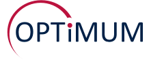
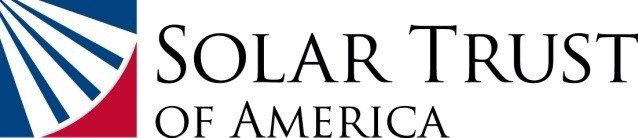
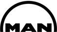
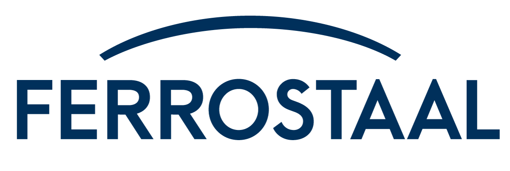
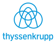

Founder · industrial executive · entrepreneur
Uwe T. Schmidt
Founder, international industrial executive, and entrepreneur. A career building and leading businesses in metals, supply chains, energy, technology, and investment.
From the founder
A Word from the Founder
My career has unfolded in two worlds, often at the same time: building, buying and developing businesses for our family, while serving in senior leadership roles within—and in partnership with—some of the world’s largest and longest-established industrial companies.
I have been an entrepreneur and an intrapreneur. Working across both worlds has taught me to combine the initiative of an owner with the discipline required to deliver within a global enterprise. An opportunity must make commercial sense. It must also survive the practical realities of financing, execution and people.
Above all, people.
I have had the privilege of working with exceptionally talented colleagues, partners and advisers. My family has worked alongside me through demanding assignments and ambitious ventures. I may have brought the vision and the determination to begin a journey, but reaching the destination has always required the intelligence, judgment and tireless work of many people.
A few convictions have guided me.
It is not about being right. It is about doing the right thing—and making the correct decision.
Winning matters. Competition is natural and healthy. I believe in committing everything an undertaking deserves, while recognizing that some prices should never be paid.
And imagination matters. A large undertaking is not necessarily proportionately more work than a small one. Often, there are simply more zeros. Dream big, then do the work.
My rules of engagement are straightforward: come prepared; bring criticism with at least the beginnings of a solution; and share the first inkling of a problem immediately. Then it becomes our problem, and we work on it together. Concealing a problem is unacceptable.
Once we commit to a destination, we stay committed. Winds, tides and currents may force us to change course. We may need to tack east or west. That is navigation. The destination remains.
I do not give up. Nor give in. That has been both a strength and a weakness. Experience has taught me that persistence must travel with judgment.
Solar Trust of America tested those convictions profoundly. What the team accomplished, the outcome we could not prevent and the value that endured all belong in the record.
The principle connecting our commercial work and our foundation is equally clear: a sustainable, positive future for our family depends on creating sustainable, positive outcomes for others. We call that POFO—Positive Outcomes for Others.
Most people want the same basic things: respect, recognition, good health, security for their families, a better future for their children and some enjoyment along the way. Leadership carries a responsibility to help make those things possible.
10/4 Enterprises brings together more of my experience than any undertaking before it. It may also prove to be the most ambitious. I look forward to the journey with a new team of capable, committed men and women.
There is more to build.
Uwe
Explore the career record ↓Company · name · dates
A career, in chapters.
1983–present STAHLSCHMIDTINCORPORATEDStahlschmidt Incorporated (SI)
STAHLSCHMIDTINCORPORATEDStahlschmidt Incorporated (SI)
- Founder, Chairman of the Board & CEO · Stahlschmidt Incorporated · Cleveland · Nov 1997–present.
From UTS Services and UTS Holdings Ltd to Stahlschmidt, the work expanded into trading, structured finance, supply chains, investment and business building. Uwe is the founder; Marilyn is the co-founder of the Stahlschmidt chapter that began in June 1987.
Cleveland Capital Corporation
- Co-founder, Chairman & Managing Partner · Cleveland Capital Corporation · Cleveland · Dec 2009–Dec 2014.
Uwe and Kai co-founded Cleveland Capital Corporation. Uwe served as Chairman and Kai as Vice Chairman, alongside their managing-partner responsibilities.
HCC Holdings (HCCH)
- 50/50 joint venture partner · HCC Holdings, with Reinhard Seifert, founder of Hanseatic Coal & Coke Trading GmbH, Hamburg · 2014–2024.
Uwe’s former boss and mentor, Seifert was Chairman and CEO of Thyssen Carbometal & Co. GmbH when he appointed Uwe, at age 29, to run its international coal trading business from New York, New York. Their lifelong friendship culminated in a joint venture established to supply 100% of the solid-fuel requirements of Serbia’s state-owned Železara Smederevo steelworks.
The Serbian project · 2014–2015
September 5, 2014. Esmark Europe B.V. was formed as the acquisition vehicle.
October 28, 2014. Esmark announced its intention to participate in the Serbian privatization process.
January 12, 2015. Serbia selected Esmark Europe’s bid for Železara Smederevo and authorized strategic-partnership negotiations.
February 2015. The parties did not reach a definitive sale agreement. The proposed acquisition did not close.
March 3, 2015. Esmark continued to pursue a role in the steelworks through a management-services proposal.
Esmark Inc.
- Principal, Co-Founder & Board Member · Esmark Inc. · Pittsburgh · Nov 2003–2025.
Interoil International AG
- Founder, Chairman & CEO · Interoil International AG · Zurich · Oct 2003–Nov 2014.
West Hill Development Co., LLC
- Co-Founder, Chairman & Co-CEO · West Hill Development Co., LLC · Gates Mills · Apr 2007–Oct 2014.
Solar Steel LLC
- Founder & Chairman · Solar Steel LLC · Jun 2009–May 2013.
Stahlschmidt Solar LLC
- Founder & Chairman · Stahlschmidt Solar LLC · Jun 2011–May 2013.
Esmark Steel Group
- Executive Chairman & Interim CEO · Esmark Steel Group · 2013.
KeyCommodities AG / KeyHoldings
- Founder, Chairman & CEO · KeyCommodities AG · Zug · Apr 1999–Sep 2002.
Olympic Continental Resources, LLC
- Co-founder, Principal, President, CEO & Board Member · Olympic Continental Resources, LLC · Cleveland · Feb 1997–Nov 1999.
UTS Services · UTS Holdings · Stahlschmidt Ltd
- Founder · UTS Services; UTS Holdings Ltd, Canada · September 1983; renamed Stahlschmidt Ltd, London · June 1987.
Shale Inland LLC
- Founding Shareholder · Shale Inland LLC · from 2010.
Stahlschmidt Trading Ltd
- Founder, CEO & Principal · Stahlschmidt Trading Ltd · Jersey; HQ London.
USG Holdings Ltd
- Co-founder, Co-CEO & Principal · USG Holdings Ltd.
Interoil Services LLC
- Co-founder & Principal · Interoil Services LLC.
Noble Metalle AG
- Co-founder, Co-CEO & Principal · Noble Metalle AG.
- Board Member · Noble Metalle AG · Zurich, Switzerland · April 1990–November 1995.
Barrington Capital Partners LLC
- Board Member · Barrington Capital Partners LLC.
Cross Capital · Solar Equity · Key Holdings
- Board service · Cross Capital AG, Solar Equity AG and Key Holdings.
College Pro Painters Ltd
- Principal · College Pro Painters Ltd · Toronto · 1981–1983.
Present10/4 Enterprises
- Executive Chairman · 10/4 Enterprises.
The Opportunity
10/4 Enterprises is building an ecosystem designed to level the playing field for independent truck owner-operators with fewer than 10 trucks.
Small operators perform essential work across the American economy. Yet access to the purchasing power, financing options, insurance arrangements and direct commercial relationships available to a large carrier is unobtainable for an individual operator.
10/4 Enterprises is being developed to close that gap while preserving the independence that makes ownership worthwhile.
Acting on behalf of 10/4us—a member-owned, owner-operator managed and self-governing platform—10/4 Enterprises aggregates purchasing, financing, insurance and freight demand to give small independent operators access to the scale and commercial opportunities currently available principally to mega carriers.
Two Sources of Economic Power
The model addresses both sides of a truck’s economics: what it costs to operate and what it earns.
On the cost side, aggregated demand is intended to support wholesale purchasing and competitively priced financing and insurance through specialized operating partners. Bringing independent businesses together creates a larger commercial opportunity for suppliers and a stronger negotiating position for participating operators.
On the earnings side, the ecosystem is designed to support direct relationships with shippers and a more transparent route to freight, with brokerage fees capped at 5% on eligible 10/4 Logistics transactions.
The objective is to improve the share of each truck’s economic value retained by the people who own, operate and maintain it.
Member Ownership and Independence
10/4us is intended to give owner-operators a collective voice and a practical means of exercising it.
Member ownership, owner-operator management and self-governance place the platform’s purpose with the people whose livelihoods depend on its performance. Independent businesses gain access to shared commercial strength while retaining their individual businesses.
10/4 Enterprises has a complementary role: organizing the ecosystem, aggregating demand and coordinating the specialized operating partnerships needed to deliver its services.
The distinction matters. The owner-operator remains the business owner. The ecosystem is designed to make that ownership more economically rewarding.
How the Ecosystem Works
Purchasing, financing, insurance and freight are closely connected in the daily economics of trucking. Improving one can help. Coordinating all four creates the possibility of a more substantial change.
The model brings these activities into a common commercial framework while drawing on specialist expertise for their delivery. Its intended advantages include lower operating costs, more competitive financial products, direct shipper access and a greater share of freight revenue retained by the operator.
Together, these improvements target an economic opportunity of up to US$75,000 per truck annually through lower costs and additional earnings. This is a modeled objective; the outcome for each operator will depend on operating circumstances, participation and execution.
The Next Undertaking
For Uwe, 10/4 Enterprises brings together decades of experience in international trade, industrial supply chains, structured finance, business development and partnerships between entrepreneurial companies and global enterprises.
It also carries forward a principle shared across the family’s commercial and philanthropic work: lasting success is built by creating positive outcomes for others.
The ambition is substantial. So is the work required to deliver it. The undertaking will depend on a capable team, committed operating partners and the owner-operators whose experience must help shape the platform.
The purpose is straightforward: preserve independence, strengthen the economics of ownership and allow the people doing the work to retain more of the value they create.
2015–present
OPTiMUM Holdings (OH)
- Executive Chairman of the Board · OPTiMUM Holdings LLC · January 2015–present.
Established as the family office to manage the family’s interests and those of a few other high-net-worth family offices.
MetalsBridge & related companies · 1999–present
- Founder, Chairman & CEO · MetalsBridge and related supply-chain management (SCM) ventures · 1999–present.
MetalsBridge developed from steel trading into structured trade finance, technology and supply-chain management. Its related ventures include BridgeTrade, Bridge iT, Bridge Consulting and Bridge Shipping & Chartering.
Group companies & platforms
MetalsBridge · BridgeTrade · BridgeShipping & Chartering · Bridge iT · Bridge iD · Optimum iD · Verie LLC · 10/4 Enterprises · Optimum Management Services.
BridgeTrade’s joint venture with Nippon Steel Trading is also documented under the Nippon segment.
FoundationI AM 4 ALLFOUNDATIONI AM 4 ALL Foundation
- Founder · I AM 4 ALL Foundation.
The I AM 4 ALL Foundation puts the family’s principle of “doing well while doing good” into practice. Liberty4All advances fair opportunities for rehabilitation and reentry; Freedom4All stands against trafficking and exploitation; Education4All expands access to learning, mentorship and practical skills; and Dignity4All connects people with work and pathways to enterprise. Dignity underpins all four chapters: every person has worth before any achievement, and a fair opportunity to contribute can help that worth become visible.
2009–2012 · 2021–present
Solar Trust of America
An ambition matched by a team
Solar Trust was, at that time, the defining work of Uwe’s career, built with the best team he had had the privilege to assemble and lead.
The undertaking brought together industrial development, energy, structured finance and international supply chains on an exceptional scale. As Chairman and Chief Executive Officer, Uwe worked alongside Chief Financial Officer John Clapp, Kai and a multidisciplinary team to advance a solar development pipeline of approximately 2.25 gigawatts.
At its center was Blythe: a proposed 1,000-megawatt development in California, presented at its June 2011 groundbreaking as the world’s largest planned solar power facility. Uwe joined U.S. Interior Secretary Ken Salazar and California Governor Jerry Brown to mark that milestone.
What the team built
The work extended far beyond identifying promising sites. It required assembling land rights, advancing permits and transmission arrangements, negotiating power sales, organizing industrial procurement and developing the financing structure needed to turn a major energy proposal into an executable project.
The original Blythe development secured a 20-year power purchase agreement with Southern California Edison covering its first two generating units, with expected deliveries of approximately 1,102 gigawatt-hours annually—22.04 terawatt-hours over the contract term. The team secured approximately US$3 billion in project-level financing arrangements across debt, cash equity and tax equity for the original development plan.
In addition to securing those project-financing arrangements, the team achieved another major financing milestone: in April 2011, the U.S. Department of Energy offered a US$2.1 billion conditional loan-guarantee commitment for Blythe’s first 484 megawatts—the largest amount then offered to a solar project through the department’s loan programs. The commitment remained conditional and did not become a funded federal loan.
The project-level financing arrangements had been secured. It was the corporate-level funding required from the German majority shareholders that was unavailable or not forthcoming. Those shareholder obligations were distinct from the project financing the team had arranged.
The Attempt to Preserve the Business
The German shareholders’ financial difficulties unfolded during a profound shift in the global solar industry.
The dramatic decline in photovoltaic module prices, driven in part by expanding Chinese manufacturing, challenged the economics of concentrated solar power—the technology central to Solar Millennium’s and Ferrostaal’s solar businesses. Germany’s solar industry also faced successive reductions in government support under Chancellor Angela Merkel’s government, adding policy uncertainty to an already difficult commercial environment.
Uwe and the Solar Trust team adapted. In August 2011, the company announced the conversion of Blythe’s first 500 megawatts from CSP to PV in response to changing market economics.
The strategy was pragmatic: “PV today. CSP tomorrow.”
It preserved the immediate development opportunity while recognizing CSP’s potential where storage and dispatchable generation were valued. The approach reflected an increasingly important distinction in utility procurement: requirements that could be met with lower-cost solar generation, and those for which storage justified a different technology.
A Joint Venture. An Offer. The Last Chance.
Uwe sought to buy the German shareholders’ interests and continue the business.
He negotiated a proposed 50/50 joint venture with what was then the largest photovoltaic solar company in the United States. The proposal included a nine-figure acquisition consideration payable over time for Solar Trust and its projects and assets.
The objective was to preserve the company, retain the team and provide an alternative ownership structure capable of carrying the projects forward.
The shareholders declined the proposal and pursued a transaction with Solarhybrid. That alternative also unraveled. Solarhybrid filed for insolvency in March 2012, having warned that proposed German subsidy reductions threatened its project economics.
Uwe, John Clapp and Kai were subsequently removed from their positions. Without ownership or management authority, the fate of Solar Trust was out of their hands. Solar Trust entered Chapter 11 in April 2012.
The Value That Endured
Blythe and Palen subsequently passed to other developers and were redesigned and built as major photovoltaic facilities.
Their later completion underscores the lasting value of the team’s site selection, permitting, transmission and development work. Although the original projects were not built by Solar Trust, both locations ultimately became major solar facilities under successor ownership.
For Uwe, Solar Trust remains one of his highest professional achievements and his most difficult business outcome. Both belong in an honest account of the undertaking.
The Legacy Continues
Uwe preserved the Solar Trust of America name and brand. Revived in 2021, it now houses the family’s renewable energy interests, predominantly in solar.
The legacy includes the people who undertook the work, the development foundations they established, the energy now being generated at those locations and the experience carried into what comes next.
2014–2022 Nippon Steel Trading · BridgeTrade
Nippon Steel Trading · BridgeTrade
A German, Canadian, American, Japanese joint venture.
April 25, 2014
MetalsBridge LLC entered a structured trade-finance and supply-chain arrangement with the Nippon trading group, sharing profits and losses equally on purchases and sales involving Ohio Coatings Company, Inc. (OCC) and Ohio Cold Rolling Company, Inc. (OCRC). The Japanese trading parent was then Nippon Steel & Sumikin Bussan Corporation, now Nippon Steel Trading Corporation.
September 19, 2017
Bridge Trade, LLC was formed as a wholly owned subsidiary of MetalsBridge LLC.
March 10, 2018
MetalsBridge LLC entered the 50/50 BridgeTrade joint venture with Nippon Steel & Sumikin Bussan Americas, Inc., the U.S. trading company now named Nippon Steel Trading Americas, Inc. A management-support agreement accompanied the joint-venture and members agreement.
April 1, 2019
Nippon Steel & Sumikin Bussan Americas, Inc. became Nippon Steel Trading Americas, Inc. The Japanese parent also adopted the name Nippon Steel Trading Corporation.
January 7, 2020
The joint-venture and members agreement was amended for system design, adoption and business commencement. Bridge iT, LLC, a MetalsBridge subsidiary, provided technology support and a non-exclusive licence to use the MetalsBridge platform for the venture with Nippon Steel Trading Americas, Inc.
January 5, 2022
MetalsBridge LLC acquired Nippon Steel Trading Americas, Inc.’s 50% interest in Bridge Trade, LLC under a settlement and sale of membership interest agreement.
2001–2010

MAN / Ferrostaal
- Board Member · MAN Ferrostaal AG · Essen, Germany · January 2004–September 2010.
- President, CEO & Board Member · MAN Ferrostaal Incorporated North America · Chicago / Houston / Cleveland · September 2001–September 2010.
- Co-founder, Co-CEO, Shareholder, Managing Director & Board Member · Coutinho & Ferrostaal GmbH & Co. KG · Hamburg · January 2008–September 2010.
- Founder, Chairman, President, CEO, Board Member & Principal · Ferrostaal Metals Group · Chicago / Houston / Essen · June 2006–January 2009.
- Chairman & CEO · MAN Ferrostaal Canada Ltd · Burlington, Ontario · July 2002–January 2008.
- Management Group / Steering Committee Member · MAN House North America · New York · January 2004–December 2007.
- Strategic Alliance Partner & Minority Shareholder · MAN AG subsidiaries · Munich, Germany.
Following the 2001 combination of Stahlschmidt’s MetalsBridge steel-trading and supply-chain business with MAN’s North American Ferrostaal organization, Uwe led the North American business from approximately US$585 million in annual sales to US$1.3 billion in three years. Uwe then consolidated and led the international Ferrostaal Metals Group, with offices in 60 countries and approximately US$2.3 billion in sales by the combination with CCC Steel. The transaction was announced in 2007; Coutinho & Ferrostaal began operating on January 1, 2008. Uwe continued in management and board responsibilities through 2010.
These were overlapping leadership responsibilities across one industrial group and related ventures.
1983–1997
Thyssen / thyssenkrupp
- Co-founder, Chairman, CEO & Board Member · Thyssen Continental Resources LLC · Cleveland, Ohio / Detroit, Michigan · May 1995–January 1997.
- Senior Vice President, Chief Operating Officer & Management Board Member · Thyssen Incorporated North America · New York / Detroit · December 1989–June 1995.
- CEO / Divisional President & COO · Thyssen Metallurgical Products Company · New York · October 1992–May 1995.
- CEO / Divisional President & COO · Thyssen Sonnenberg Group · New York · January 1991–May 1995.
- Senior Vice President & General Manager / CEO · Thyssen Carbometal Company North America · New York · 1989–1991; General Manager appointment January–December 1990.
- Managing Director · Thyssen Carbometal & Co. GmbH · Hamburg / Duisburg, Germany · 1987–1989.
- Managing Director · Thyssen Carbometal S.E.A. Ltd · Hong Kong · 1987–1989; General Manager, Thyssen Handelsunion Trading Co. Hong Kong · March 1988–December 1989.
- Managing Director / General Manager · Thyssen Handelsunion Delegate Office Australia · Melbourne · August 1987–February 1988.
- Founder & Managing Director · Thyssen Carbometal Company of Canada Ltd · Vancouver · May 1985–August 1987.
- Executive Assistant to the Chairman & CEO · Thyssen Incorporated · New York · October 1984–April 1985.
- Executive Management Training Programme · Thyssen Stahl AG / Thyssen Handelsunion · Duisburg / Düsseldorf · September 1983–September 1984.
From management training and executive-assistant responsibilities to managing businesses in Germany, the Netherlands, Canada, Australia, Hong Kong, and the United States, this chapter established the international industrial experience behind later entrepreneurial and executive assignments.
At age 29, Reinhard Seifert, Chairman and CEO of Thyssen Carbometal & Co. GmbH, appointed Uwe to run its international coal trading business from New York, New York. Their lifelong friendship and mentorship later led to the HCC Holdings joint venture.
The full perspective
The full perspective.
Uwe is the founder of the family enterprise that evolved from UTS Services and UTS Holdings Ltd into Stahlschmidt. International metals, minerals and energy trading became the foundation for a career in supply chains, structured trade finance, executive management, technology and investment.
Industrial growth, on an international scale.
Following the 2001 combination of Stahlschmidt’s MetalsBridge steel-trading and supply-chain business with MAN’s North American Ferrostaal organization, Uwe led the North American business from approximately US$585 million in annual sales to US$1.3 billion in three years. Uwe then consolidated and led the international Ferrostaal Metals Group, with offices in 60 countries and approximately US$2.3 billion in sales by the combination with CCC Steel. The transaction was announced in 2007; Coutinho & Ferrostaal began operating on January 1, 2008. Uwe continued in management and board responsibilities through 2010.
Solar Trust of America.
Solar Trust brought together Uwe’s experience in industrial development, structured finance and international supply chains. The complete chapter sets out what the team built, the attempt to preserve the business and the value that endured.
Read the complete Solar Trust story ↗The family’s approach is to stay engaged when circumstances change: adapt the plan, seek new partners, commit to a solution and keep building. That commitment continues through Stahlschmidt, OPTiMUM Holdings and the family’s newer ventures.
The I AM 4 ALL Foundation puts the family’s principle of “doing well while doing good” into practice. Liberty4All advances fair opportunities for rehabilitation and reentry; Freedom4All stands against trafficking and exploitation; Education4All expands access to learning, mentorship and practical skills; and Dignity4All connects people with work and pathways to enterprise. Dignity underpins all four chapters: every person has worth before any achievement, and a fair opportunity to contribute can help that worth become visible.